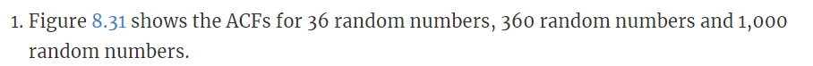
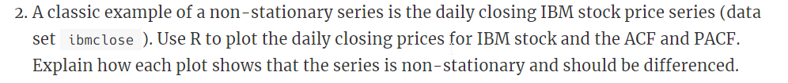
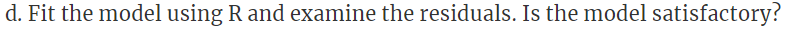
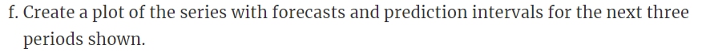
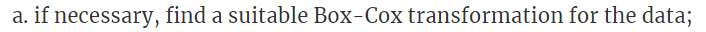
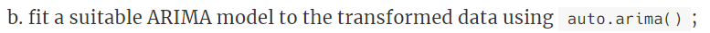
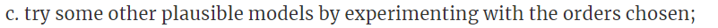
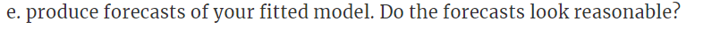
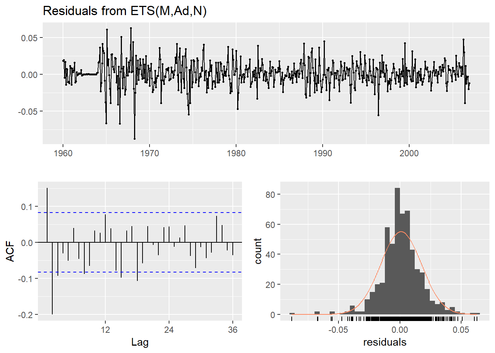

Chapter 6 HW5
6.0.1 8.1

6.0.1.1 8.1a

Answer: An ACF plot shows the correlations from linear relationships between lagged values of a time series for various lags. The first plot has the largest magnitude of correlations amongst lagged values, with some getting to about 0.25 and -0.3. It also has the largest critical values (the blue lines). As we move to the right, the critical values decrease and the correlations also decrease in magnitude until in the third chart, one can hardly see the correlations.
I think that the charts pretty well show that the data are white noise. We don’t see any correlations far over the critical value lines so that suggests there aren’t correlations from one value to the next (meaning that it is in reasonable to assume that it is white noise).
6.0.1.2 8.1b

Answer: In the first chart, the sample size is so small (36), and the chances of an accidental correlation from that small sample are so great, that the correlation would have to be very high in order to be significant. This is why the critical values are pretty large in magnitude (around 0.3 and -0.3). As the number of values in each sample increases and we move to the right, the likelihood of getting an accidental correlation due purely to random luck decreases, so the critical values showing the bar for significance also decrease as even a very modest correlation is likely to be significant and not due purely to random luck.
Furthermore, the autocorrelations also decrease in magnitude as we move from left to right, as there are more and more examples of the relationship between one value and the next. When there are few values, it is very easy to find a correlation between subsequent values based solely on random luck coming from white noise. However, as more values are added, it becomes more difficult to find a correlation that is due to luck. Not finding a strong relationship, the correlation values decrease.
6.0.2 8.2

Answer: We plot the data below. Just by looking at it we can tell that there are instances of trend and of decreasing variance. Consequently, we know that it is not stationary.
library(fpp2)
autoplot(ibmclose)
If we look at the ACF, we can see that each value is related to previous values. At each increasing lag value, there is still great signficance in the relationship between a value and the related lag value. This means that the time at which a value occurs is important to determining its value, so again, it is non-stationary.
In terms of difference, every lag value is significant. What we don’t know if whether the significance of lag 2, for example, comes from its relationshop to lag 1, or if is is significant on its own. Thats why we need to look at the PACF.
#ACF
acf(ibmclose)
The PACF removes the significance due to previous lags. This chart clearly shows that the lag of 1 is the significant lag, and any subsequent lags are significant only because they had the relationship with the first lag. So a difference of 1 is the correct difference to be applied here.
#PACF
pacf(ibmclose)
6.0.3 8.7

6.0.3.1 8.7a

6.0.3.2 8.7b

6.0.3.3 8.7c

6.0.3.4 8.7d

6.0.3.5 8.7e

6.0.3.6 8.7f

6.0.3.7 8.7g

6.0.4 8.12

data(mcopper)
autoplot(mcopper)
6.0.4.1 8.12a

Answer: given the huge spike in 2005-2010 in copper prices, a Box-Cox transformation to help with the increased variance would be useful. A Box-Cox test finds a lambda of 0.191 to be optimal.
lambda <-BoxCox.lambda(mcopper)
mcopper_adj <- BoxCox(mcopper,lambda)
autoplot(mcopper_adj)
6.0.4.2 8.12b

Answer: auto.arima() finds an ARIMA(0,1,1) model, meaning that we have a 0 autoregressive part, with a single first degree difference, and 1 for the moving average part.
model <- auto.arima(mcopper_adj)
summary(model)## Series: mcopper_adj
## ARIMA(0,1,1)
##
## Coefficients:
## ma1
## 0.3720
## s.e. 0.0388
##
## sigma^2 estimated as 0.04997: log likelihood=45.05
## AIC=-86.1 AICc=-86.08 BIC=-77.43
##
## Training set error measures:
## ME RMSE MAE MPE MAPE MASE
## Training set 0.01254827 0.2231365 0.1592271 0.08049384 1.140225 0.1997301
## ACF1
## Training set -0.0041846216.0.4.3 8.12c

Answer: I tried six other options with different orders. All were either equal or less in log likelihood or had higher AIC and AICc. They were also more complicated by adding, for example, an autoregressive part when the above model doesn’t have one.
option1 <-Arima(mcopper_adj, order=c(1,0,1))
summary(option1)## Series: mcopper_adj
## ARIMA(1,0,1) with non-zero mean
##
## Coefficients:
## ar1 ma1 mean
## 0.9955 0.3740 14.1730
## s.e. 0.0044 0.0388 2.1536
##
## sigma^2 estimated as 0.05009: log likelihood=42.77
## AIC=-77.55 AICc=-77.48 BIC=-60.21
##
## Training set error measures:
## ME RMSE MAE MPE MAPE MASE
## Training set 0.01102121 0.2232071 0.1600608 0.05878252 1.148836 0.2007759
## ACF1
## Training set -0.003909071option2 <-Arima(mcopper_adj, order=c(1,1,0))
summary(option2)## Series: mcopper_adj
## ARIMA(1,1,0)
##
## Coefficients:
## ar1
## 0.3231
## s.e. 0.0399
##
## sigma^2 estimated as 0.05091: log likelihood=39.83
## AIC=-75.66 AICc=-75.64 BIC=-66.99
##
## Training set error measures:
## ME RMSE MAE MPE MAPE MASE
## Training set 0.01154793 0.2252223 0.1601516 0.07483773 1.147554 0.2008897
## ACF1
## Training set 0.03831971option3 <-Arima(mcopper_adj, order=c(0,1,0))
summary(option3)## Series: mcopper_adj
## ARIMA(0,1,0)
##
## sigma^2 estimated as 0.05674: log likelihood=8.85
## AIC=-15.7 AICc=-15.69 BIC=-11.37
##
## Training set error measures:
## ME RMSE MAE MPE MAPE MASE
## Training set 0.01733237 0.2379863 0.1716493 0.1074569 1.227148 0.2153122
## ACF1
## Training set 0.3187708option4 <-Arima(mcopper_adj, order=c(1,0,0))
summary(option4)## Series: mcopper_adj
## ARIMA(1,0,0) with non-zero mean
##
## Coefficients:
## ar1 mean
## 0.9980 13.9151
## s.e. 0.0025 3.0608
##
## sigma^2 estimated as 0.05692: log likelihood=6.21
## AIC=-6.41 AICc=-6.37 BIC=6.59
##
## Training set error measures:
## ME RMSE MAE MPE MAPE MASE
## Training set 0.01677141 0.2381561 0.1721394 0.09649416 1.232327 0.2159269
## ACF1
## Training set 0.3189333option5 <-Arima(mcopper_adj, order=c(0,2,1))
summary(option5)## Series: mcopper_adj
## ARIMA(0,2,1)
##
## Coefficients:
## ma1
## -1.0000
## s.e. 0.0066
##
## sigma^2 estimated as 0.05664: log likelihood=6.66
## AIC=-9.32 AICc=-9.3 BIC=-0.66
##
## Training set error measures:
## ME RMSE MAE MPE MAPE MASE
## Training set 0.004015354 0.2373549 0.1711164 0.01596248 1.225196 0.2146437
## ACF1
## Training set 0.3187439option6 <-Arima(mcopper_adj, order=c(1,1,1))
summary(option6)## Series: mcopper_adj
## ARIMA(1,1,1)
##
## Coefficients:
## ar1 ma1
## -0.0092 0.3797
## s.e. 0.1053 0.0961
##
## sigma^2 estimated as 0.05006: log likelihood=45.05
## AIC=-84.1 AICc=-84.06 BIC=-71.1
##
## Training set error measures:
## ME RMSE MAE MPE MAPE MASE
## Training set 0.01259577 0.2231351 0.1592422 0.08076154 1.14026 0.199749
## ACF1
## Training set -0.0027287246.0.4.4 8.12d

Answer: for the reasons given above, the original model is the best. We can confirm this by also forcing auto.arima() to check more of the available options. It still returns an ARIMA(0,1,1) model.
The residuals look good. A Ljung-Box test returns a p-value of 0.4659 which is not significant. The residuals are normally distributed, are not autocorrelated, and have roughly stable variance over time. So the model appears to pass the test.
model2 <- auto.arima(mcopper_adj, stepwise=FALSE, approximation=FALSE)
summary(model2)## Series: mcopper_adj
## ARIMA(0,1,1)
##
## Coefficients:
## ma1
## 0.3720
## s.e. 0.0388
##
## sigma^2 estimated as 0.04997: log likelihood=45.05
## AIC=-86.1 AICc=-86.08 BIC=-77.43
##
## Training set error measures:
## ME RMSE MAE MPE MAPE MASE
## Training set 0.01254827 0.2231365 0.1592271 0.08049384 1.140225 0.1997301
## ACF1
## Training set -0.004184621#residuals
checkresiduals(model)
##
## Ljung-Box test
##
## data: Residuals from ARIMA(0,1,1)
## Q* = 22.913, df = 23, p-value = 0.4659
##
## Model df: 1. Total lags used: 246.0.4.5 8.12e

Answer: a forecast of the fitted model looks reasonable. The prediction interval seems to be wide enough to capture what, based on looking at the historical data, are the likely values to come.
autoplot(forecast(model))
6.0.4.6 8.12f

Answer: The ARIMA model appears to be a better model. The prediction intervals are much smaller (the ETS intervals provide almost no real help in what the value could be). Comparing summary statistics, the ARIMA model has AIC of -86.1, AICc 0f -86.08, and BIC of -77.43. Other measures are RMSE (0.223), MAE (0.159), MAPE (1.14), and MASE (0.199).
In contrast, the ETS model has very high AIC (1919), AICc (1919), and BIC (1945). Other measures are similar or higher: RMSE(0.233), MAE (0.166), MAPE(1.19), and MASE(0.208).
Also, the ETS model does not account for some autocorrelation, as shown by the ACF plot below and as given by the Ljung-Box test p-value of basically 0 (meaning that the results are significant and we can conclude that there is autocorrelation).
So the ETS model in this instance does not do very well at all in comparison to the ARIMA model, which is much more useful in its predictions and much more accurate with respect to model measures.
model_ets<-ets(mcopper_adj)
autoplot(forecast(model_ets))
summary(model_ets)## ETS(M,Ad,N)
##
## Call:
## ets(y = mcopper_adj)
##
## Smoothing parameters:
## alpha = 0.9971
## beta = 0.26
## phi = 0.8
##
## Initial states:
## l = 9.9204
## b = -0.2684
##
## sigma: 0.0168
##
## AIC AICc BIC
## 1919.482 1919.633 1945.492
##
## Training set error measures:
## ME RMSE MAE MPE MAPE MASE
## Training set 0.008892997 0.2330528 0.1662713 0.06395868 1.19264 0.2085661
## ACF1
## Training set 0.1508258checkresiduals(model_ets)
##
## Ljung-Box test
##
## data: Residuals from ETS(M,Ad,N)
## Q* = 80.996, df = 19, p-value = 1.252e-09
##
## Model df: 5. Total lags used: 24